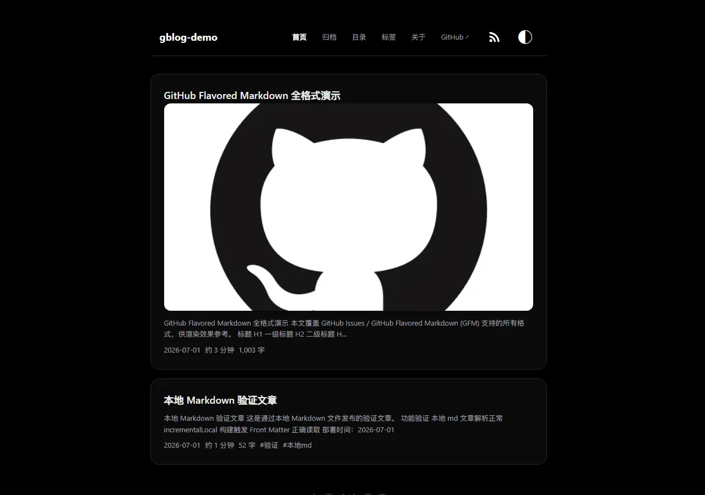

图文与结构化内容预览
图文与结构化内容预览
这篇文章组合测试 图像、结构化段落、链接、表格、任务列表、代码、脚注与数学表达式；内容仅用于部署验收。
层级与强调
第三级标题
第四级标题
文本支持 重点、语气、重点语气、旧版本 和 preview-mode。公开参考链接：Markdown Guide。
混合列表
-
春季示例
- 图片预览
- 表格预览
-
冬季示例
- 数学预览
- HTML 预览
-
元数据日期覆盖
-
标签与目录分类
-
后续人工浏览器检查
引用、代码与数据表
可重复的示例比依赖临时数据的示例更容易验证。
本嵌套引用没有真实用户数据。
{
"kind": "demo",
"safe": true,
"items": ["image", "table", "math"]
}
| 季度 | 示例数 | 通过率 |
|---|---|---|
| Q1 | 12 | 100% |
| Q2 | 18 | 100% |
| Q3 | 24 | 100% |
图像与 HTML 图注

更多格式
行内引用
、sample output、n 与 辅助文字。
脚注与数学
归档年份应来自文章 meta 日期1，而不是 Issue 创建时间。
行内公式：。
- 该文章的日期覆盖为 2025-12-05。↩